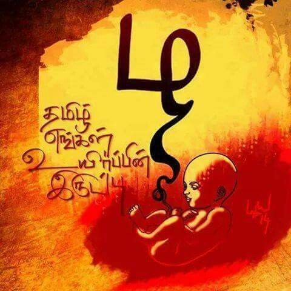

<div class="landing-page">
  <div fxLayout="row" fxLayout.lt-md="column" fxLayoutGap="2%" fxLayoutAlign="center center">
    <div fxFlex="50%" fxFlex.lt-md="95%" class="card" fxLayout="column" fxLayoutGap="3%" fxLayoutAlign="center center">
      
    </div>
    <div fxFlex="50%" fxFlex.lt-md="95%" class="card" fxLayout="column" fxLayoutGap="3%" fxLayoutAlign="start start">
      <h1 class="card-title">தமிழ் மொழி</h1>
      <p class="card-text">
        தமிழ் மொழி, தமிழர் மற்றும் தமிழ் பேசும் மக்களின் மொழியாகும். இது இந்தியாவின் தமிழ்நாடு மாநிலம் மற்றும்
        இலங்கையின் வடக்கு மற்றும் கிழக்கு மாகாணங்களில் பேசப்படுகிறது. தமிழ் மொழி, இந்தியாவின் 22 அதிகாரப்பூர்வ
        மொழிகளில் ஒன்றாகும் மற்றும் உலகின் 20வது மிகப் பெரிய மொழியாகும். தமிழ் என்பது திராவிட மொழிகளின் தாய்மொழி,
        முக்கியமாக இந்தியா, இலங்கை மற்றும் சிங்கப்பூரின் அதிகாரப்பூர்வ மொழிகளில் ஒன்றாகும்,
        மேலும் நீண்ட இலக்கிய பாரம்பரியத்தைக் கொண்டுள்ளது.
        <br />
        <br />
        தமிழ் மொழி உலகின் மிக நீண்ட காலமாக எஞ்சியிருக்கும் பாரம்பரிய மொழிகளில் ஒன்றாகும், இதன் வரலாறு 2,000
        ஆண்டுகளுக்கும் மேலானது. இது கிமு 3 ஆம் நூற்றாண்டைச் சேர்ந்த சங்க இலக்கியம் போன்ற பண்டைய நூல்கள் உட்பட அதன் வளமான
        இலக்கிய பாரம்பரியத்திற்காக அறியப்படுகிறது. இந்த மொழி ஒரு தனித்துவமான எழுத்துமுறை மற்றும் சிக்கலான இலக்கண
        அமைப்பைக் கொண்டுள்ளது, இது திராவிட குடும்பத்தின் பிற மொழிகளிலிருந்து வேறுபடுகிறது.
        <br />
        <br />
        தமிழ் மொழி உலகெங்கிலும் உள்ள மில்லியன் கணக்கான மக்களால் பேசப்படுகிறது, இந்தியா, இலங்கை, மலேசியா, சிங்கப்பூர்
        மற்றும் மத்திய கிழக்கு, ஐரோப்பா மற்றும் வட அமெரிக்காவில் குறிப்பிடத்தக்க இருப்பைக் கொண்டுள்ளது. இது இந்திய
        அரசாங்கத்தால் ஒரு பாரம்பரிய மொழியாக அங்கீகரிக்கப்பட்டுள்ளது மற்றும் இந்தியாவின் 22 திட்டமிடப்பட்ட மொழிகளில்
        ஒன்றாகும். தமிழ் எழுத்து என்பது ஒரு அபுகிடா ஆகும், அதாவது ஒவ்வொரு எழுத்தும் உள்ளார்ந்த உயிரெழுத்து ஒலியுடன்
        கூடிய மெய்யெழுத்தை குறிக்கிறது, இது வெவ்வேறு உயிரெழுத்து ஒலிகளைக் குறிக்க டயக்ரிட்டிக்ஸுடன்
        மாற்றியமைக்கப்படலாம். தமிழ் அதன் கவிதை மற்றும் இசை மரபுகளுக்கும் பெயர் பெற்றது. தமிழ் பேசும்
        பகுதிகளின் கலை, இலக்கியம் மற்றும் தத்துவத்தில் இந்த மொழி வலுவான செல்வாக்கைக் கொண்டுள்ளது, மேலும் இது தமிழ்
        மக்களின் கலாச்சார அடையாளத்தின் ஒரு முக்கிய பகுதியாகும். அதன் இலக்கிய மற்றும் கலாச்சார முக்கியத்துவத்திற்கு
        இணையாக, தமிழ் அறிவியல் மற்றும் தொழில்நுட்ப மொழியாகவும் உள்ளது, தமிழ்ப் பேசும் பகுதிகளிலிருந்து பல அறிவியல்
        மற்றும் தொழில்நுட்ப கண்டுபிடிப்புகள் உருவெடுத்துள்ளன.
      </p>
    </div>
  </div>
</div>